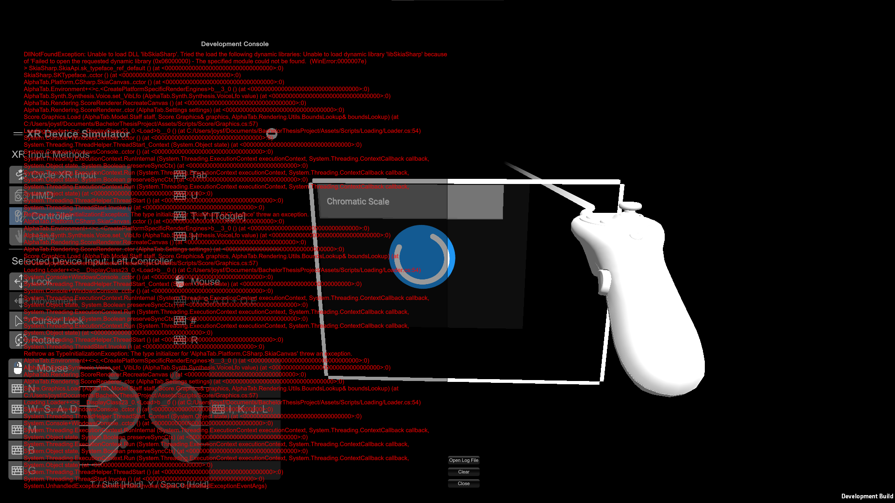

Ieri ho incontrato un bug in laboratorio dove le build standalone si bloccavano durante il caricamento delle tracce, oggi investigando ho trovato che il motivo era che (per qualche motivo) Unity tutto d'un tratto ha scelto di NON COPIARE i .DLL nativi dai quali dipende AlphaTab nella directory della build. Ho risolto mettendo come target dei .DLL nativi (che funzionano solo su windows x64) TUTTE le piattaforme, al che ora Unity li copia...
Ora che i requisiti sono fissi (spero almeno ...) ho cominciato la (ri)strutturazione definitiva con documentazione (su domanda del prof :( altrimenti non la avrei fatta dato che mancano poche ore e questo lavoro sfora gia per conto proprio).